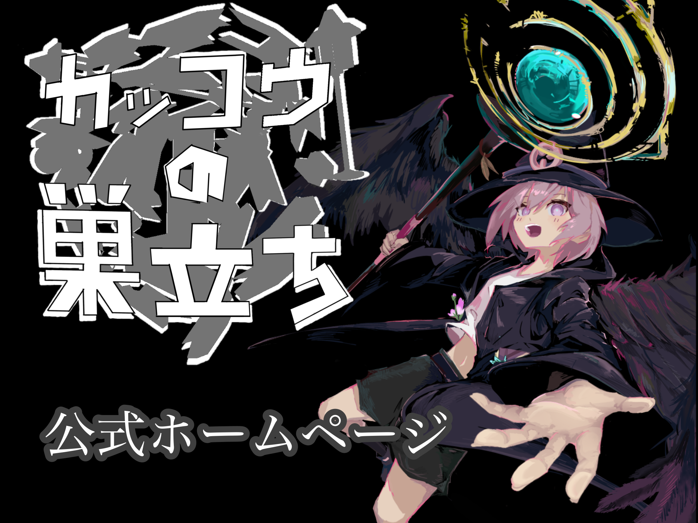
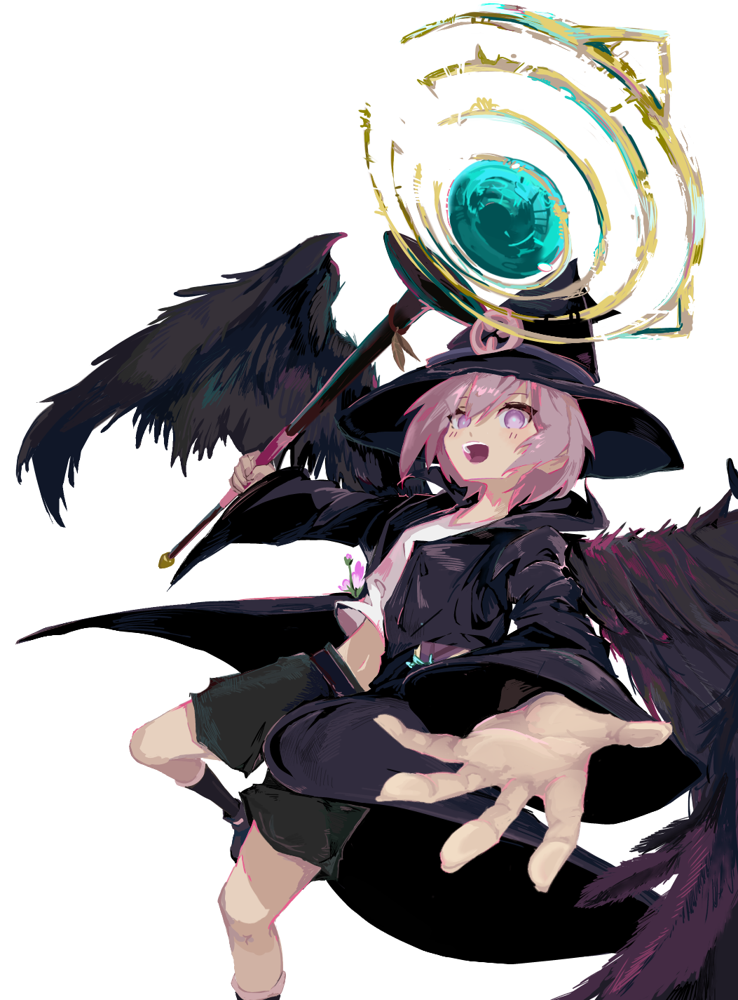
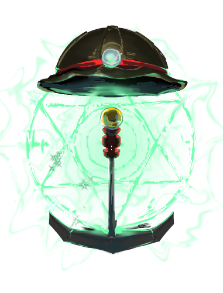
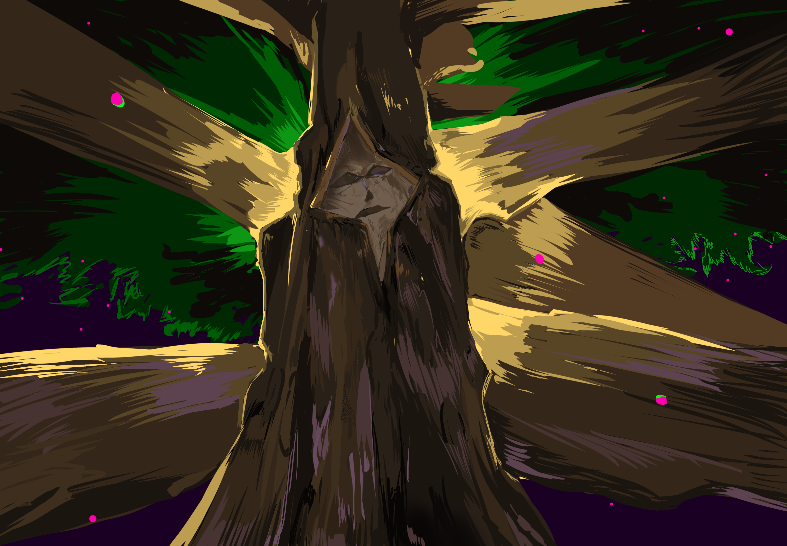
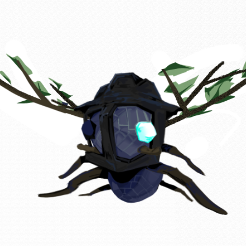
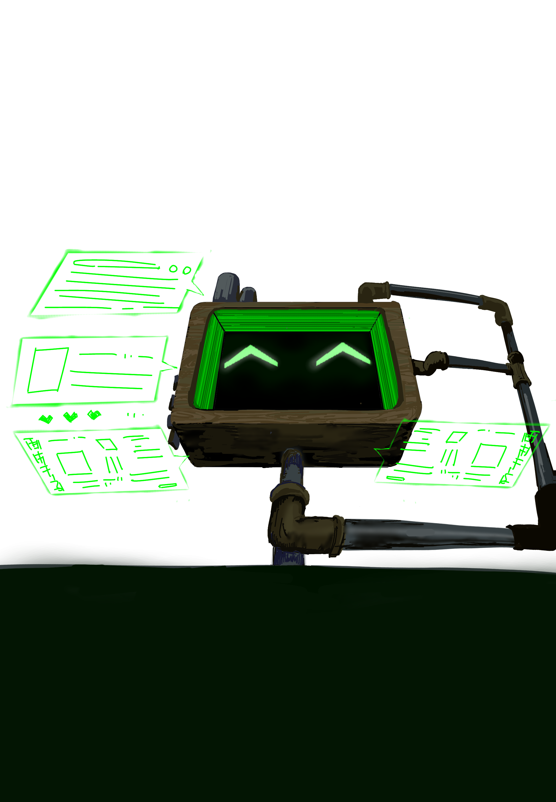
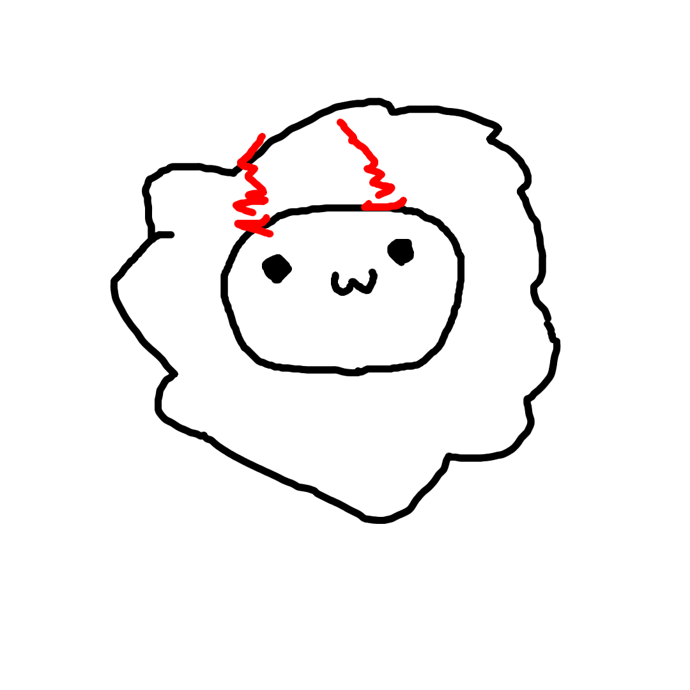
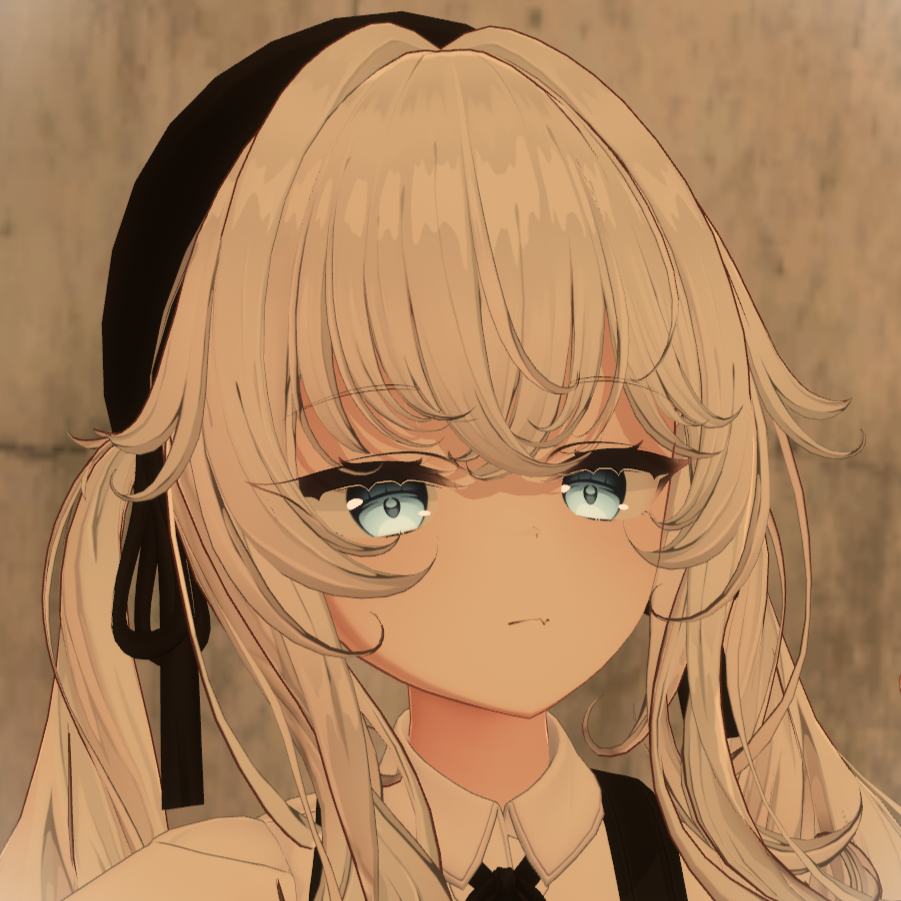
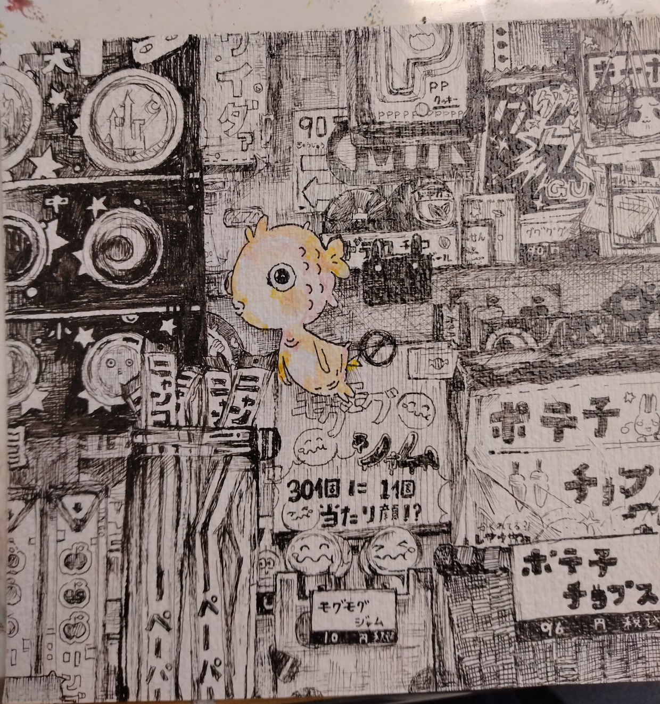

あらすじ
プレイヤーはダンジョンの脱出の為、魔法で道を切り開きながら
謎の少女エシュと共に支配者マザーツリーを倒す。
ワールドリンク: VRChatゲームワールド「カッコウの巣立ち」
プレイ可能人数: 1～4人
プレイ時間: 4時間～6時間以上（セーブ可）


探究者であり、プレイヤー達と同じくダンジョン外から来た存在。
自分の夢や野望の為ならば手段を問わない男である。
過去の大事件のせいでダンジョン内に封印されて亡霊と変えられてしまった。
マザーツリーを倒すという利害一致のもとプレイヤー達と協力関係を持つ。
CV： totsuichi


ダンジョンを作る生物「アントレイバー」達のリーダー。
エシュの兄であり、彼女を傷つけないようにとても気を配る。
だがエシュ以外にはとても厳格な性格で、マザーツリーの命令には絶対服従し、リーダーとしての威厳を大切にする。
CV： TERU


マザーツリー、ミュータ、謎の機械のCVを担当。
監督、脚本、ゲーム内のBGM、効果音、プログラミング、UIデザイン、モデリング等の一部声以外の全ての制作を担当。
Xアカウント：
@TERU_VRC

チンピラアリ２とアン太郎のCVを担当。
本人の自己紹介：
羊な者です～音楽を教えたり歌ってみたもやってます～！
台詞を読み上げたり、音楽にちょっとアドバイスを教えた程度です
初めてだから大目にめてね～（ ❛・ω・❛）
Xアカウント：
@Hitsuji_Na_Mono

亡霊のCVを担当。
彼は声のいい一般VRChatterです。
本人の自己紹介：
VRChat界の快男児、風雲児、無頼漢、益荒男として知られるtotsuichiです。
Xアカウント：
@totsu_VRC

キャラクターの立ち絵を担当
リンク等は無いようですが、もし彼女に依頼などがあればTERUに連絡を頂ければこちらから伺ってみます。
本人の自己紹介：
イラスト描くことが大好きな女です。
このゲームのキャラクターのイラスト担当してます。
